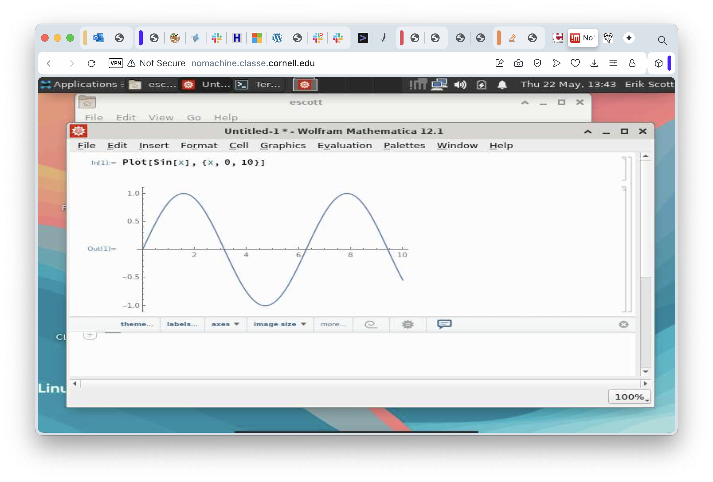

Getting Started - Accessing the Linux Cluster with NoMachine and SSH
In the course of your research at CHESS, you’ll need to do a lot of computation. What constitutes “a lot” is discipline-specific and varies tremendously depending on what the exact processing is. It’s entirely possible that much of your work can be completed on your laptop. On the other hand, it’s also likely that at least some, and possibly a great deal, of your computing will need to be done on the Linux cluster. In simple terms, the cluster is a collection of machines running Linux (a variant of Unix) and able to coordinate workflows, assigning the running of “stuff” to an appropriate server at the right time.
While there are many servers in the cluster, one of them is special. It’s name is “LNX201”, and it’s responsible for accepting new jobs and dealing with the output. It’s also the right server to use for developing your programs. Keep in mind that dozens of people may be using LNX201 at the same time, so don’t use it for running lengthy computations. If your job runs for more than a few seconds, it’s probably time to learn how to run it on some of the worker nodes. We’ll talk about that subject in SF201 when we get our first look at batch processing. Until then, we’ll keep our examples comfortably small and LNX201 will be the perfect home.
Remote Desktop Access
Why do we need remote access at all? My laptop has a pretty decent processor, nice graphics, and a tolerable keyboard. Why don’t I just use that? The answer, or one of the answers, is that the computers in the cluster are larger and more powerful. LNX201 has 16 CPUs (“cores”, sort of) and 128 gigabytes of RAM. Each of the cores in the server are several times faster than the ones in a laptop. In short, the compute cluster can handle jobs that would bring a laptop to its knees, fans screaming, too hot to handle.
There are two kinds of remote access and both have their strengths and weaknesses. The first approach we’ll look at is the “virtual desktop”. This strategy takes the full graphical experience of using a computer, potentially in a far-flung destination, and shows what is going on right in front of you. The effect is to make your computer’s screen, keyboard, and mouse act like they’re connected to the remote machine, albeit with a really, really long set of cables. The second remote access approach is to use a program on your laptop or desktop to connect over the network to a remote machine and just pass characters back and forth. It gives you, for all practical purposes, something that looks like a window for using the command line, only the computer running those commands is remote.
Virtual Desktops - NoMachine
CHESS uses a software system called “NoMachine” for remote Virtual Desktop access. NoMachine has oodles (a scientific term) of features and configuration settings, but if you just want a basic Virtual Desktop that is good enough for all but a few special cases then you can just play on Easy Mode: use the web client that runs inside a browser and just take the default settings.
The rest of this lesson assumes you have: 1. A CLASSE username and password 2. The DUO app installed on your phone and configured for access to CLASSE 3. The “Pritunl” Virtual Private Network software installed on your laptop.
The instructions for each of these steps are in the very first steps shown in CLASSE-IT 2025 Summer Student Guide.
Go ahead and connect to the CLASSE internal network through the Pritunl VPN software. Then go to your web browser and put in the destination URL https://nomachine.classe.cornell.edu. In just a moment, you should be seeing the initial login screen for NoMachine itself. Put in your username and password, then click on “OK” in the lower right corner.
This starts the login process, the next part of which is using DUO for two-factor authentication:

On this screen, enter a “1” if you want to use the Duo app on your phone. Otherwise, you can enter “2” and the Duo servers will call you to verify that the person trying to log in at least controls that phone number. If you selected “1”, then in just a moment your phone will beep, you can go to the Duo app, and click the green button to approve of the login request. Completing the Duo process will take you to the next screen.

In this screenshot, I’ve already selected “lnx201” so you can spot it right away. This is the one you’ll want to use. Go on and double click it to start logging in to LNX201. You’ll see a screen listing the available session types. In principle you could confighure different graphical environments here, but in reality you should just take the default.
Clicking OK on that will take you a quick reminder of some commands that might be useful when you’re connected. There is a checkbox you can select when you get familiar with this and that will keep this screen from showing up again.

In the meantime, click OK to continue to the next helpful screen:
And then OK again to see a screen with some helpful advice, to be sure, but also a chance to select how the screen resolution should be handled.
On this screen I have selected the first option, “Scale the remote desktop to fit into the window”, because I like being able to change the size of my browser window and yet still see the same amount of screen space on the remote machine. Try different options here - you won’t break anything. Clicking “OK” will take you to the final information-and-setup screen:
This screen gives options for setting up the screen resolution on the remote computer. Because LNX201 is a server and not a machine with an actual graphics card and a monitor, all the sessions use simulated (virtual) desktops and that means they can be set to any resolution you want. Selecting “Don’t resize” is a reasonable starting point. You might want to experiment with the others later. In any case, we can finally click on “OK” for this screen and connect to the desktop session!
It may take a moment for everything to start up, and another moment for the remote screen drawing to catch up, but pretty soon you’ll see a Linux desktop environment. Desktop environments have mostly converged on roughly the same concepts. The one you see here is “Xfce”, and it traces its heritage to the great Unix Workstations of the 1980s. MacOS, similarly, is derived from NeXTstep which is based on work on Unix Workstations in the 1980s. Various versions of Windows are based on… you get the idea. They’re all more alike than different.
Ironically, perhaps, the most common thing we’ll do on a remote desktop session is “start a terminal window”. In this case, the task is dead simple: click on the “Applications” menu and select the “Terminal Emulator” item.

In just a moment, the terminal window appears:

Just as you would expect, we have a file browser available and it’s more or less equivalent to Windows’ Explorer or to the Mac’s Finder. Double Click on the “Home” folder…
Quite a few applications are already installed in the Linux cluster, some of which can really take advantage of having graphics through a remote desktop environment. One example is Mathematica:

At this point, we’ve seen how to log in to the Linux cluster through a virtual desktop session, seen how to move around just a bit in that graphical environment, and teased ourselves with a bit of mathematical loveliness. All good things must come to an end, eventually, and this session is no exception. When you’re ready to go, click on your name in the upper right corner of the desktop, select the “Log Out…” menu item, and log off. This will cause the session to end and you’ll go back to the initial login screen for NoMachine.

Now that we’ve gone through the basics, there might be (should be?) one nagging… consideration. Doesn’t this seem like a fairly complicated and not terribly fast way to use to use a Linux machine remotely if all I want to do is work in a terminal session?
Yes. Yes it is.
Fortunately, there’s another way. It’s called “SSH”.
Remote Terminal Access with SSH
To have a good understanding of SSH, you need to know just a little bit about the history of Unix (and Linux is just a modern version of Unix). In the Old Days (1974-ish) Unix ran on a machine the size of home refrigerator and the server didn’t even have a keyboard. To interact with it, teletypes were plugged into serial ports on the back on the computers. Users performed all of their interaction with the machine by pressing a key on the teletype (sending a character) and waiting for the computer to send back characters to be printed. By the late 1970s, teletypes were getting rare quickly because they had been replaced by “terminals” (a keyboard, a picture tube, and enough electronics to draw the characters on the screen). The connection to the computer was still a serial cable. To this day, you can plug a USB-to-Serial converter into a Linux machine, plug in a teletype or a terminal, set up a configuration file, and use the computer like it’s 1979. It’s fun a time or two, but the novelty wears off.
Serial cables had a length limitation and a speed one. Half a mile was easy (9600 bits per second, even!) but a mile was getting unreliable at any speed much over 1200 bits per second. Beyond a mile, longer distances required all sorts of interesting hardware and lots of special cables. Covering a whole campus required a network of some sort, and what the research and academic world standardized on was “Internet Protocol” (IP). One of the first programs ever written for IP was a program called “telnet”. This program used the network to set up a stream of characters to and from a remote machine to the local one. It was like having a serial cable, except it was literally a thousand times faster and could reach around the world. To this day, telnet is still the “official” way to use Internet Relay Chat (IRC). Plus, it makes you look cool.
Telnet was great in the early days of networking. But we were so naive back then. Anyone who could get access to the network could eavesdrop on whatever communications was going over these telnet connections. Most of the traffic was utterly boring - email, Unix commands, that sort of thing. But there was one thing worth snooping on, and it was the first two things a user typed when they set up a connection: their username and their password. In the late 1980s and early 1990s, this was mostly a theoretical concern. The problem was the explosive growth of the Internet in the “Dot Com” era (1995-2000). Once there were a critical mass of Internet users, and once these users started using the Internet for things that were worth actual money, security started moving front and center. By this point, sending anything over the internet without encrypting it became a VBA (Very Bad Idea). Thus was born the Secure SHell (SSH).
The simple explanation of SSH is “it’s just telnet, except all the communication is encrypted”. This statement is true, in the sense that SSH replicates every telnet function, but SSH also does some other tricks. For our purposes, we’re going to keep it simple and just use it like a “better telnet”.
To use SSH on your computer, you need to bring up a “Terminal Window” (Mac) or “Command Window” (Windows). On a Mac, use Finder to browse the Applications folder. In there, open the Utilities folder, then double click on Terminal. (After a while, you might decide to just use Spotlight to search for Terminal.app, but it’s up to you). On a PC, the easiest thing to do is press and release the “Windows” key, then type “cmd” and press enter. That will bring up a command window.
Either way, you’re now looking at a terminal window of some sort. Characters are entered and sent to programs, and programs send characters back out and the terminal window draws them on the screen. Just like a teletype, except no paper and no oily smell. Windows users will probably see something similar to C:\>. Mac users will see something more akin to escott@RENCI_LP91DX62MX ~ %. Both of these are “prompts”, meaning “you can type a command here”. In both cases the command to type is ssh lnx201.classe.cornell.edu. The lower case letters in “ssh” are important. Linux commands almost never contain uppercase letters. Go ahead, enter that ssh command, and press Enter. If this is the very first time you’ve ssh’ed into lnx201 from the machine you’re at, you’ll get some warnings just to remind you to be wary:
The authenticity of host 'lnx201.classe.cornell.edu (128.84.45.81)' can't be established.
ED25519 key fingerprint is SHA256:cIplmL7rqVGlAKYlTwtfml+KiSvUuBhgKuyjkPbde7E.
This key is not known by any other names.
Are you sure you want to continue connecting (yes/no/[fingerprint])?You can type “yes” here and press enter, and ssh will tell us it’s storing that cryptographic fingerprint. The “fingerprint”, by the way, refers to a encrypted, secure way to tell we’re really using the server we think we are. It has nothing to do with ridges and swirls on our fingertips. We’re going to assume no one has hijacked the actual name of the server and put up a fake one. There is a way to protect against this, but it’s a (minor?) hassle so it’s rarely done. Since we’re doing this the rough-and-ready way, ssh informs us it’s going to store a cryptographic “fingerprint” for the server. It will check that fingerprint every time we try to connect in the future and make sure it matches. If it doesn’t, it’ll warn us to be suspicious and not continue until we’re at least comfortable we know why.
Whether it needs to notify us of anything or not, it will always prompt with the following:
(escott@lnx201.classe.cornell.edu) Password:At this point, type your password. Nothing will appear as you’re typing, not even any little dots. When you think about it, teletypes didn’t have any little dots.
If you type your password correctly, you’ll see one more prompt:
(escott@lnx201.classe.cornell.edu) Duo two-factor login for escott
Enter a passcode or select one of the following options:
1. Duo Push to XXX-XXX-3880
2. Phone call to XXX-XXX-3880
Passcode or option (1-2):Enter a “1” and press enter. You’ll hear Duo chiming on your phone. Approve your login, let all of that percolate through the system for a second, and you’ll see your command line prompt on LNX201:
[escott@lnx201 ~]$At this point, you can run all of your favorite commands: ls, mkdir, the whole bunch. When you are done, don’t forget to log out. The “exit” command logs you out and breaks down the SSH connection.
Parting Shot, and a Note to the Nerds
We’ve just looked at two very different ways to remotely access the CLASSE Linux servers that CHESS uses. The remote desktop approach, using NoMachine, has the advantage of being relatively easy to use and of fully supporting graphical programs but at the expense of potentially quite a bit of lag time between doing something and seeing the results on the screen. Using SSH, on the other hand, will usually feel more responsive and use less network bandwidth but is for command line use only - no graphics. Which one to use is a matter of deciding what tradeoffs are acceptable. If you’re on campus then bandwidth isn’t an issue. Use both - no one will judge you. If you’re out in the boondocks and getting network connectivity through a bad cellphone connection then you might want to use SSH.
SSH has a few more tricks up its sleeve. One is that it can copy files. When you copy files this way you use the “scp” command instead of “ssh”, but it’s really the same program behind the scenes. Another trick is that it can do “port forwarding” - a poor substitute for a VPN, but sometimes you’re in a situation where you’re not allowed to install a VPN to get to your instrument, for instance. And finally, yes, I have to acknowledge this for the nerds who’ve been waiting to ambush me… ssh can be used to run graphical programs remotely. The “-X” and “-Y” options are the relevant ones. Results are “good enough” for simple programs over very fast networks, but slower networks make the experience miserable and complicated graphical programs (Chrome? Just saying…) are awful no matter how fast the network is.
Coming up next, we’ll use these remote connections to start learning about command line tools and how to use them.